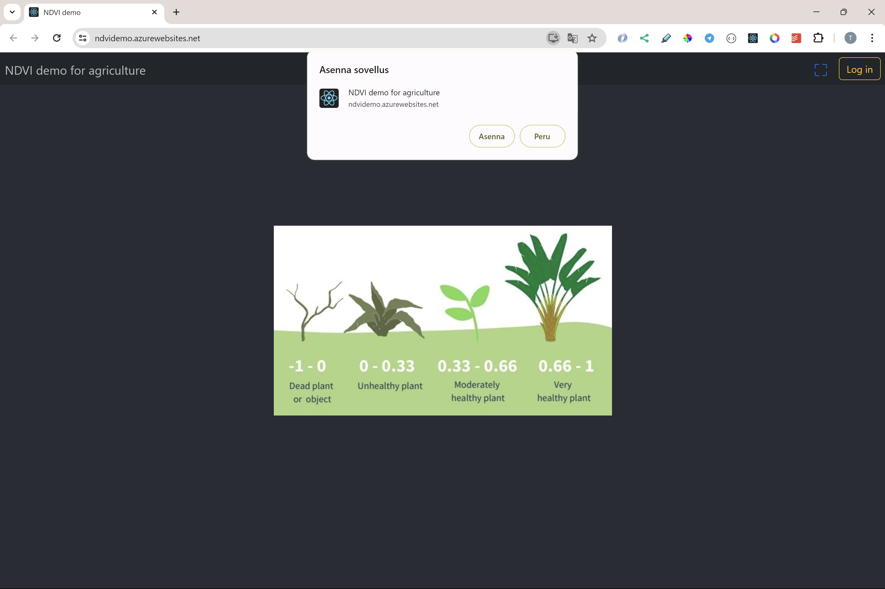
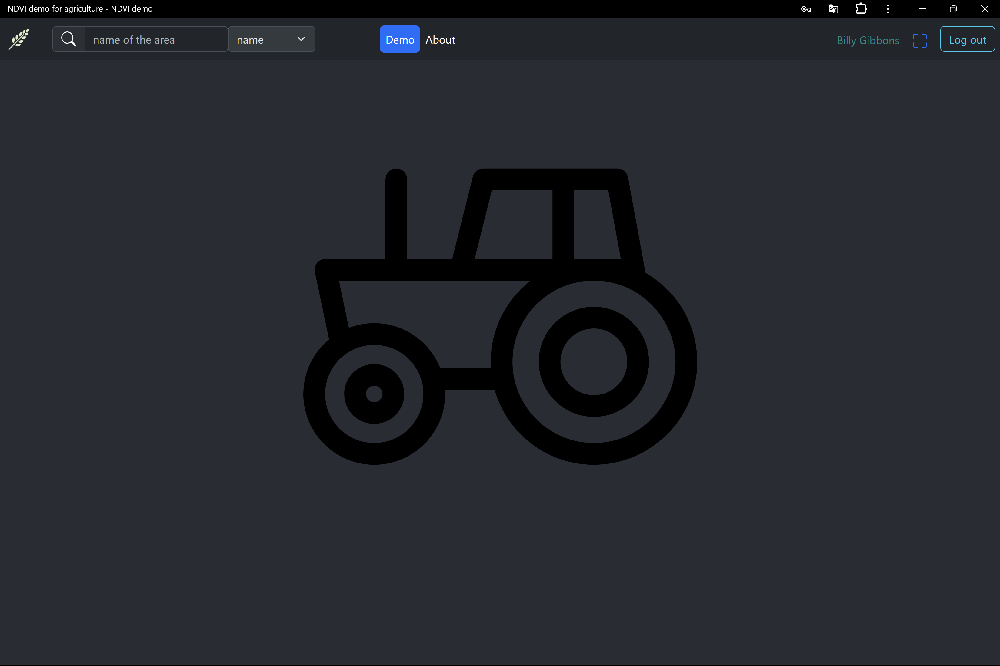

Deployment
This frontend application is a part of MERN-stack,
it is located in the same server than backend.
For the deployment the app should be build.
npm run build
and the build folder should be copied to backend's root.
app.js on backend code
This way frontend code is taken as a part of MERN-stack.
app.use('/', express.static('build'));
The deployment process is perfomed as a part of deployment of backend.
Launching the application
App (the MERN-fullstack) runs on a Azure web service
https://ndvidemo.azurewebsites.net
Installing application

